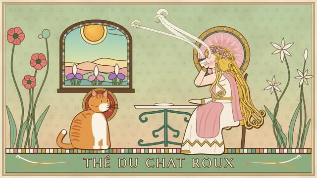

Library / Illustrators
8 keywords in this category, each one tested and explained in plain language.
Pick keywords as you browse, then press Copy for AI and paste into ChatGPT, Claude or any AI. Copy keywords gives a plain list for Midjourney or Seedance.

(1860-1939) Czech artist of the Art Nouveau poster: graceful women with flowing hair, framed by flowers, halos and curling ornaments in soft colors.
(1867-1939) English illustrator of fairy tales and Peter Pan, full of twisted trees, gnarled roots and tiny fairies.
(1872-1898) English illustrator of bold black and white drawings with sweeping curves, big flat black shapes and very fine lines.
(1866-1943) English author and illustrator of Peter Rabbit.
(1882-1953) French-born British illustrator of fairy tales and the Arabian Nights.
(1889-1931) Irish stained glass artist and illustrator of eerie fairy tales and Edgar Allan Poe stories.
(1876-1942) Russian illustrator of folk tales, with bold outlines, flat bright colors and fancy patterned borders inspired by old Russian art.
(1820-1914) English illustrator who drew the first pictures for Alice's Adventures in Wonderland.